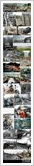

07月30日 12:56
爱转发 和其他26人转发过
| @灵步传奇：社会啊~~~08:0112:00回复 |
| @DarkDemon：恩啊，唉~~~~07月31 12:00回复 |
| @灵步传奇：无颜以对啊...07月31 12:00回复 |
| @呆呆：我也无语啊！！07月30 13:00回复 |
| @灵步传奇：社会啊~~~08:0112:00回复 |
| @DarkDemon：恩啊，唉~~~~07月31 12:00回复 |
| @灵步传奇：无颜以对啊...07月31 12:00回复 |
| @呆呆：我也无语啊！！07月30 13:00回复 |